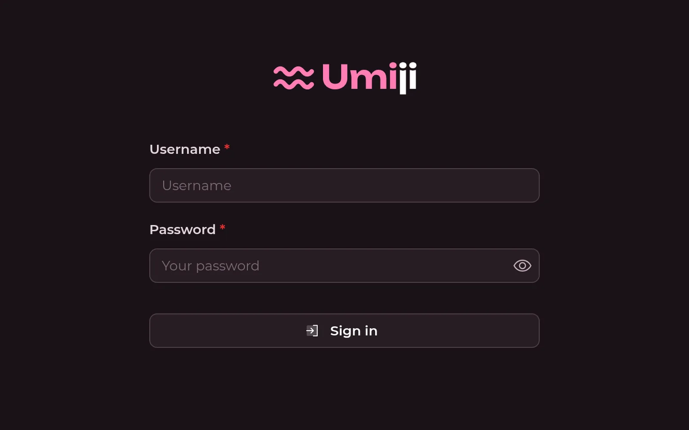
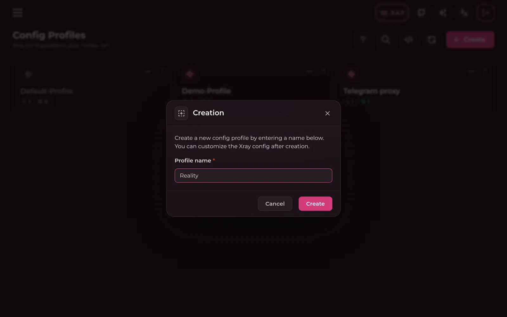
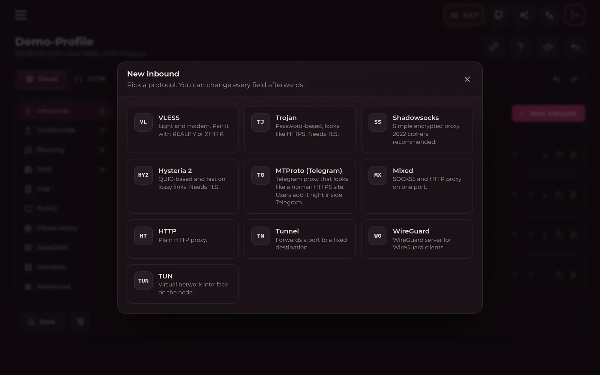
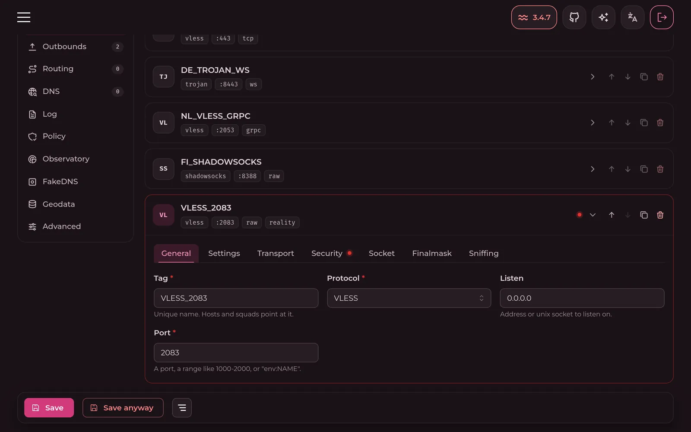
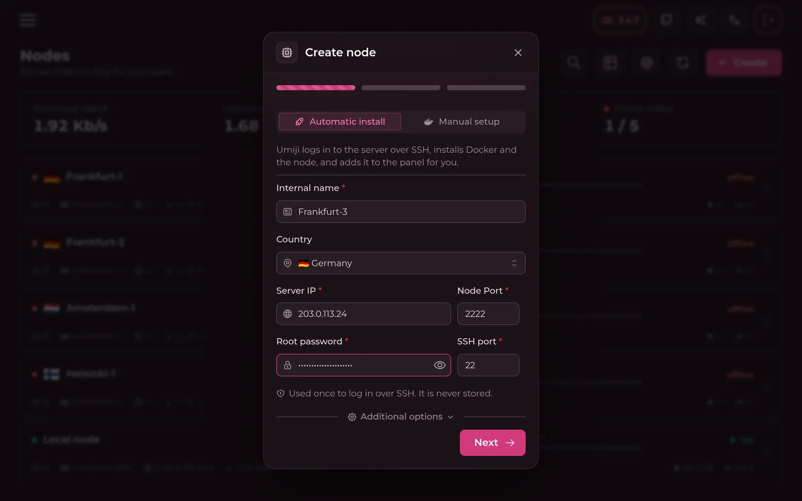
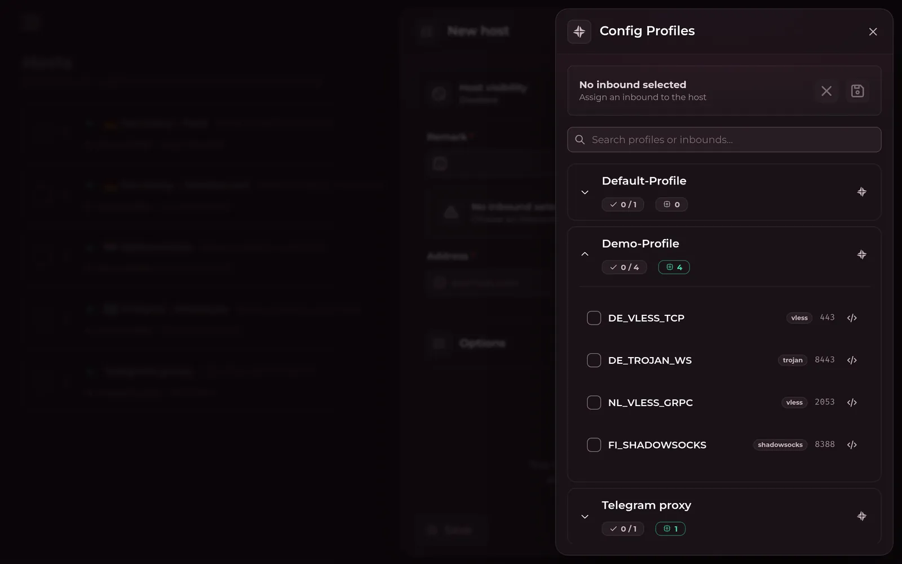
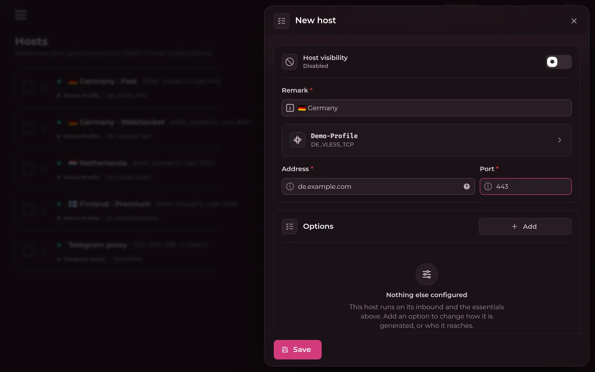
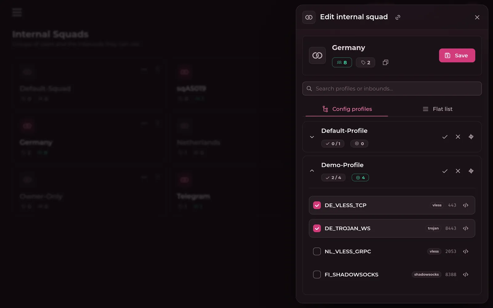

Install Umiji
One command installs everything. It adds Docker if needed, asks a few questions that each have a ready answer, and if something goes wrong, it tells you how to fix it.
What you need
- A Linux server with root access. Ubuntu or Debian is easiest.
- A domain you own, like
example.com. The panel and the subscription page each get a name under it.
Umiji has three parts. Each needs at least:
| Part | Memory | CPU | Disk |
|---|---|---|---|
| Panel, where you manage everything | 2 GB | 1 core | 10 GB |
| Node, which carries your users' traffic | 1 GB | 1 core | 5 GB |
| Sub page, which your users open | 512 MB | 1 core | 5 GB |
| All three together | 2 GB | 2 cores | 20 GB |
Run all three on one server, or give each part a server of its own. The installer asks what each server should run, so you can add parts later, here or elsewhere.
Point your domain at the server
Add two A records, panel and sub, each with your
server's IP as the value. Do it before you install: HTTPS needs them.
Namecheap is shown here. Other companies have the same fields under DNS.
- Open Domain List, press Manage next to your domain, then open Advanced DNS.
- Press Add New Record and pick A Record. Host
panel, value your server's IP. Save it with the green check. - Add another one with host
suband the same IP.
- At dash.cloudflare.com, press Onboard a domain, type your domain and pick the Free plan.
- Where you bought the domain, replace its nameservers with the two Cloudflare gives you. Wait until Cloudflare says Active.
- Open DNS, Records, and add an
Arecord namedpanelwith your server's IP. Click the cloud until it's grey (DNS only), then save. - Add
subthe same way.
Keep the clouds grey for now. The orange cloud needs extra settings.
Check it from your computer. The answer should show your server's IP:
nslookup panel.example.comRun the installer
-
Log in to the server as root. On Windows, use PowerShell.
ssh root@203.0.113.10 -
Run the installer:
bash <(curl -fsSL https://raw.githubusercontent.com/therewasluna/umiji/main/install.sh) - Pick what this server runs. Panel and Sub page are ticked. To run a node here too, type 3: the installer then adds it to the panel for you. Press Enter.
- Type your panel's domain. For every other question, Enter takes the answer in brackets, and at the password it makes a strong one.
- Save the username and password it shows at the end.
What should this server run?
[x] 1 Panel where you manage users, nodes and resellers
[x] 2 Sub page the page your users open from their link
[x] 3 Node carries your users' traffic
Panel domain, e.g. panel.example.com: panel.example.com
…
[5/16] ✓ Panel is running 31s
[6/16] ✓ Admin account admin created 0s
[16/16] ✓ Node added to the panel as Panel server 4sIf a step fails, fix what it says and type umiji: it carries on from there. Stuck? See Common issues.
Later: the umiji command
Type umiji on the server for a menu: install more parts, update,
move users from another panel, switch the store bots between polling
and webhook, back up, restore, reset the admin password, or uninstall. Backups go to /opt/umiji/backups/. They hold
everything, so keep them private, and copy them off the server now and then, from your computer:
scp root@203.0.113.10:/opt/umiji/backups/umiji-20261116-141537.tar .Use your own nginx, or a CDN
The installer's built-in HTTPS (Caddy) needs ports 80 and 443 to itself. If the server already runs other websites, pick My own nginx in the installer, then on the server:
-
Install nginx and certbot:
Ifapt install -y nginx certbot python3-certbot-nginxufw statussays active, open the web ports. Keep 3000, 3001 and 3010 closed.ufw allow 'Nginx Full' -
Open a new config file:
Paste this, with your domains. Keep the sub page'snano /etc/nginx/sites-available/umijiserverblock only if the sub page runs on this server.map $http_upgrade $connection_upgrade { default upgrade; '' close; } # The panel reads the visitor's IP from X-Umiji-Real-IP, so nginx sets it and ignores whatever the visitor sent. map $remote_addr $umiji_real_ip { default $remote_addr; # A sub page on another server that reaches the panel at https://panel.example.com sends its own # visitors' IPs. Trust it by its IP: # 203.0.113.20 $http_x_umiji_real_ip; } # Panel server { listen 80; server_name panel.example.com; # Bot broadcast photos are up to 10 MB. client_max_body_size 20m; # Backend-tools links carry a short-lived bearer token in the query string. location ^~ /api/backend-tools { access_log off; proxy_pass http://127.0.0.1:3000; proxy_http_version 1.1; proxy_set_header Host $host; proxy_set_header Upgrade $http_upgrade; proxy_set_header Connection $connection_upgrade; proxy_set_header X-Real-IP $remote_addr; proxy_set_header X-Umiji-Real-IP $umiji_real_ip; proxy_set_header X-Forwarded-For $proxy_add_x_forwarded_for; proxy_set_header X-Forwarded-Proto $scheme; } location / { proxy_pass http://127.0.0.1:3000; proxy_http_version 1.1; proxy_set_header Host $host; proxy_set_header Upgrade $http_upgrade; proxy_set_header Connection $connection_upgrade; proxy_set_header X-Real-IP $remote_addr; proxy_set_header X-Umiji-Real-IP $umiji_real_ip; proxy_set_header X-Forwarded-For $proxy_add_x_forwarded_for; proxy_set_header X-Forwarded-Proto $scheme; } } # Subscription page, if it runs on this server server { listen 80; server_name sub.example.com; location / { proxy_pass http://127.0.0.1:3010; proxy_http_version 1.1; proxy_set_header Host $host; proxy_set_header X-Real-IP $remote_addr; proxy_set_header X-Forwarded-For $proxy_add_x_forwarded_for; proxy_set_header X-Forwarded-Proto $scheme; } } -
Turn it on:
ln -s /etc/nginx/sites-available/umiji /etc/nginx/sites-enabled/rm -f /etc/nginx/sites-enabled/defaultnginx -t && systemctl reload nginx -
Get the certificates. Certbot adds HTTPS to the file and renews them on its own; the second
command checks that renewal works.
certbot --nginx -d panel.example.com -d sub.example.comcertbot renew --dry-run
The panel only answers over HTTPS, so it won't load until certbot has run. nginx always writes
X-Umiji-Real-IP itself, so nobody can fake the IP the panel sees.
Behind a CDN, like Cloudflare's orange cloud: set Cloudflare's
SSL/TLS mode to Full (strict), then list the CDN's IP ranges, or
every visitor shares one IP and one login limit. With Caddy, remove the # from the
six lines at the top of /opt/umiji/caddy/Caddyfile, list them there, run
docker compose restart umiji-caddy in /opt/umiji, and turn off
Cloudflare's Always Use HTTPS. With nginx, add this at the top of the file, one line
per range from cloudflare.com/ips:
set_real_ip_from 173.245.48.0/20;
set_real_ip_from 2400:cb00::/32;
# ...the other ranges
real_ip_header X-Forwarded-For;
real_ip_recursive on;Nodes behind a CDN need their own setup: see IP limit behind a CDN.
Prefer to install without the installer? DEPLOY.md has every step by hand.
Sign in
- Open
https://panel.example.comand sign in with the username and password the installer showed. - Read and accept the disclaimer that appears on your first visit.

The sub page
Left Sub page ticked? Then it's already running at https://sub.example.com.
Opened on its own it shows nothing; it only answers your users' links, which you'll have in step 9.
To run it on a server of its own instead, point sub at that server, then:
- In the panel, go to Umiji Settings, API Tokens, press Create API token, pick the Subpage preset and copy the token.
-
On that server, run the installer with
subat the end and paste the token when asked:bash <(curl -fsSL https://raw.githubusercontent.com/therewasluna/umiji/main/install.sh) sub - At the end it shows three commands. Run them on the panel's server.
Create a config profile
A config profile is the Xray setup your nodes run. It holds the inbounds, the ports your users connect to. Most setups need just one.
- Go to Config Profiles and press Create.
- Name it, like
Reality, and press Create. - Open the new profile. It opens in the Visual editor.

Add a VLESS inbound with REALITY
VLESS with REALITY is a good first inbound. It needs no certificate, and to anyone watching it looks like a visit to a real website.
- In the Inbounds section, press New inbound and pick VLESS. It's added on port 2083, and a red dot shows what's left to fill in.


- Open the Security tab. The keys are already made for you.
- In Target, enter a real HTTPS site that isn't yours, with its port, like
www.example.org:443. - In Server names, enter that site's domain, like
www.example.org, and press Save.

Add a node
A node is a server that runs Xray with your profile.
Ticked Node in the installer? It's already on the Nodes page as Panel server. Open it, press the pencil under Core configuration, pick your profile, tick the inbound from step 4, save the choice with the disk icon and press Save. Then skip to step 6.
For a node on another server, Umiji installs it for you over SSH:
- Go to Nodes and press Create. Automatic install is selected.
- Fill in an Internal name, the Country, the Server IP and its Root password.
- Press Next. Under Core configuration, pick your profile and tick the inbound from step 4.
- Press Install node and wait for the green dot.

Open the ports in the node's firewall: the inbound's port (2083) for your users, and on a separate server the node port (2222) for the panel.
Rather not give the root password? Pick Manual setup, copy the
Secret Key, and run the installer with node at the end on the node's server:
bash <(curl -fsSL https://raw.githubusercontent.com/therewasluna/umiji/main/install.sh) node
Create a host
A host is what users see in their app: a name and the address to connect to.
- Go to Hosts, press Create and turn on Host visibility.
- In Remark, write the name users will see. A flag emoji at the start, like
🇩🇪 Germany, shows as a flag. - Press No inbound selected, open your profile, pick the inbound from step 4 and save the choice with the disk icon.
- In Address, enter the node server's public IP, the one you SSH into, or a domain pointing to it. For Panel server that's your panel server's IP, not the
172.xaddress on the Nodes page. Set Port to the inbound's port, then Save.


Make an internal squad
An internal squad decides which inbounds its users may use.
- Go to Internal Squads, press Create and name it, like
Germany. - Open the squad, expand your profile, tick the inbound from step 4 and press Save.

Create a user
- Go to Users, press Create and enter a Username.
- Set a Traffic limit (0 means unlimited) and the Expiry date.
- Under Internal squads, tick the squad from step 7, then press Create.


Share the subscription link
Every user has one personal subscription link. It keeps working as you add or change servers.
- Open the user and copy the Subscription URL, or show its QR code.
- Send it to the user. Treat it like a password: anyone with the link can use it.

Connect from a phone
- Open the link on the phone. The subscription page shows the traffic left and the apps for that phone.
- Install an app, like Happ or v2rayNG, with the buttons under App Installation.
- Press Add Subscription, pick
🇩🇪 Germanyin the app and connect.


Can't connect? The app can't connect lists what to check.
You're live.
One profile, one node, one host, one squad and one user, working end to end. Here's where to go next.